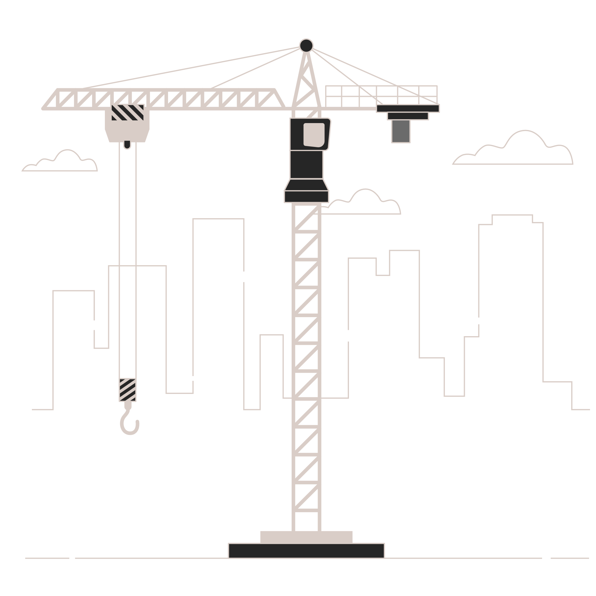

Bem-vindo a Fiuza Perdigão Engenharia e Tecnologia
"Fazemos do seu projeto, uma experiência única!"

"Fazemos do seu projeto, uma experiência única!"
A Fiúza Perdigão Engenharia foi fundada em 2013 pelos Sócios Fábio Fiúza e Emerson Perdigão. Inicialmente o propósito da empresa era trabalhar no mercado de tecnologia com obras de infraestrutura de TI. Logo no início de suas atividades a empresa se destacou no mercado pelo seu comprometimento, qualidade e foco no atendimento ao cliente. O destino, solicitações de clientes e o desejo de inovar e desenvolver novas soluções, fizeram com que a FPE migrasse para o mercado de construção civil, agregando inclusive todo o seu DNA tecnológico. Hoje entregamos soluções de engenharia em formato turn key, desenvolvendo projetos com foco em inovação e tecnologia para o mercado corporativo no setor privado.